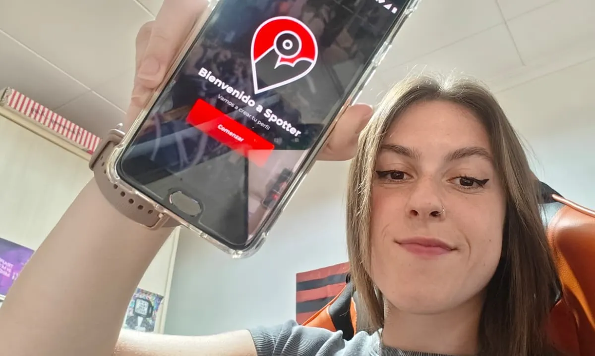
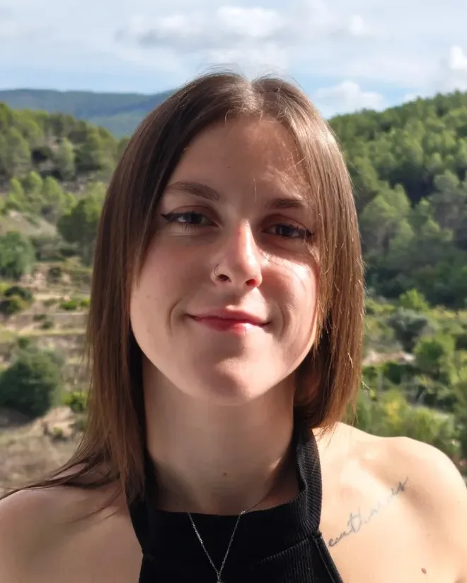

Paula

Victoria
Responsable de Marketing
& Comunicadora Audiovisual
Diseño marcas y las cuento en redes, en vídeo, en papel y en la web. De la estrategia al último fotograma.
Ver trabajo(Enfoque)
Una marca no es un logo: es todo lo que la gente ve, siente y recuerda. Trabajo en el punto donde se cruzan la estrategia, el diseño y la imagen en movimiento, para clubes de Valencia, para industria B2B y para mi propia startup.
Trabajo
seleccionado
Proyectos reales para marcas reales. Pulsa cualquiera para ver el caso completo.
Formato
vertical
Reels, stories y flyers animados para captar la atención en los tres primeros segundos. Pulsa un vídeo para activar el sonido.
Imagen en
movimiento
Edición, montaje, etalonaje y motion graphics: reportaje, ficción, videoclip, vídeo corporativo y grafismo para televisión.
Diseño &
desarrollo web
Cuatro webs diseñadas, desarrolladas y publicadas por mí, en HTML, WordPress y Wix según lo que necesitaba cada cliente.

Paula Victoria Tudela(Sobre mí)
Pienso como estratega, trabajo como creativa.
Soy graduada en Comunicación Audiovisual y tengo un Máster en Marketing y Comunicación Digital, los dos por la Universitat Politècnica de València. En 2022 fundé Spotter, una app para encontrar compañeros de entrenamiento, y desde entonces llevo su marca, su producto y su crecimiento.
He sido la responsable de marketing de cuatro locales de ocio de Valencia y de dos empresas industriales. Allí hice de todo: campañas, contenido, catálogos, ferias, webs y SEO. Antes trabajé como grafista en À Punt Mèdia y como diseñadora gráfica en la UPV y en el Ajuntament de Favara. En mi TFM creé Wonders Kids, una nueva línea de negocio para Wonders. También he sido técnica de sonido en Aigua Dolça, un documental sobre el agua dulce en Menorca que ganó el Premio Biosfera 2026 en el Menorca Docfest.
Me muevo igual de cómoda en un club un sábado por la noche que en una feria de energía solar. Lo que tienen en común: entender al público y contarle algo que le importe.
Experiencia
Formación
Herramientas & competencias
Idiomas
(Contacto)